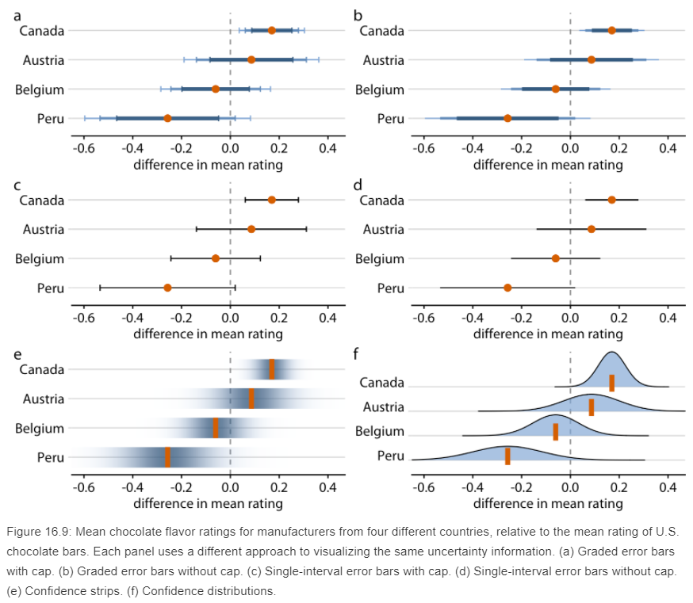
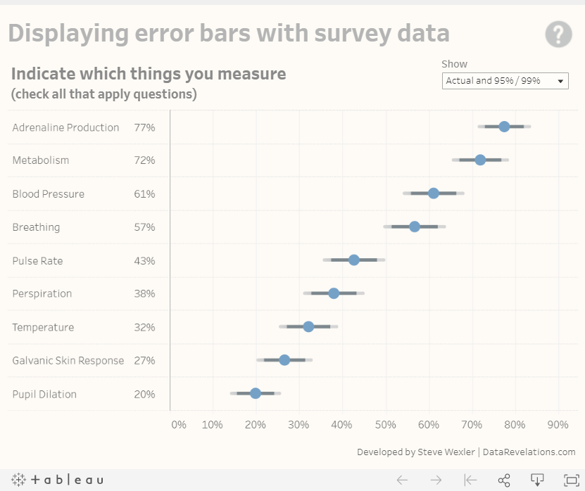

The original visualization made use of data from the Imperial College London YouGov Covid 19 Behaviour Tracker Data Hub hosted at Github, and is appended below:

Section A: Critique of Original Viz
This section provides a critique of the original visualization and comments on both clarity and aesthetic aspects that could be further improved on. A total of 10 clarity issues and 8 aesthetic issues were identified.
Clarity
| S/N | Issue | Comments |
|---|---|---|
| 1 | Title (of 100% Bar Chart) | Title asked a question with no obvious answer provided from the visualization - at a first glance, this title created more questions than answer - after looking at the viz, we are still unclear which country is more pro-vaccine. This is partly due to issue S/n 2 and S/n 3 discussed below. |
| 2 | Sort Order (for 100% Bar Chart) | The main drawback of the visualization is the lack of meaningful sort (which is presented in an alphabetical order). In this case, viewers will need to visually seek out the country with the longest blue bar in order to make meaningful deduction (assuming only the blue bars are of interest to the viz-maker - which leads to the next issue) |
| 3 | Missing Survey Question | This is another major flaw of the visualization - there is no way of knowing what was the question that respondents strongly agree or disagree to even if we know what each color is referring to. |
| 4 | Incomplete Information on Data Representation | The legend does not give any description for the values 2 (orange), 3 (red), and 4 (light blue). It does not clearly reflect that the segments are ordinal (i.e.in order of any significance) and hence confusion on the interpretation of the viz. |
| 5 | Missing Definition for Survey Responses | Relatedly, while the titular question asked which country is more pro-vaccination, there is no clear indication of which color segment constitutes the pro-vaccine population (i.e.should we count the orange bar? What about the red bar?). |
| 6 | Ambiguous Unit of Measure | % of Total Record does not sufficiently explain what the base of the % is, and what constitutes the Total Record (which seems to be a variable name) |
| 7 | Meaningless Headers in Legend | Similar to Issue 4 above, Vac 1 does not explain what question the response was for and is as meaningless as putting any random symbol. In fact, it creates even more confusion (especially since the actual survey question is no where in sight) - is the question asking whether respondents are willing to take only one (and not two) vaccine shots? Or perhaps, take it only after 1 year? |
| 8 | Redundancy of the Bar Chart on the Right | After diving deeper into the viz, it not difficult to realize that the right-hand viz is a repetition of the blue bars in the left-hand viz (except it is sorted by length of the blue bar) |
| 9 | Misleading Viz without Uncertainty | As a survey response, it is unclear how certain the visualizer is in the data (in the sense of statistical certainty) - it would be more helpful if the viz is presented with the error margins for various confidence interval presented |
| 10 | Missing Sample Size Info | In similar vein to the issue above, It is not clear if all the country has equal number of respondents, which could present a biased viz using percentage information. |
Aesthetic
| S/N | Issue | Comments |
|---|---|---|
| 1 | No Clear Color Transition | Color chosen for the ordinal scale is arbitrary and does not show any reflect any meaningful representation of the response scale, nor do they aid in answering the titular question. In fact there is even a repetition of blue (dark for 1, light for 4) for responses that are very different |
| 2 | Placement of Legend | While the legend is applicable for both charts, it is more applicable for the visualization on the right. However, the placement of it on the right panel of the viz requires viewers to glaze across the right-hand viz to extract information (however limited it is) from the land-hand viz to the legend |
| 3 | Inconsistent Order | While both the left- and right-hand viz are sending similar message, the fact that they are sorted differently makes them aesthetically irritable (and no less confusing - as covered in S/n 2 in Clarity section above) |
| 4 | Choice of Viz | Using bar chart to depict percentage of population that strongly agree to vaccination takes up unnecessary data ink (in addition to being inefficient in depicting accurate info with uncertainty - as discussed in S/n 9 in Clarity section) |
| 5 | Sloppy text | Using % instead of spelling percentage out makes the viz unprofessional and reeks of sloppiness |
| 6 | Improper Spelling of Proper Noun | The issue above is exacerbated by the fact that country names are spelled without capitalizing the initial letter, as with the norm for proper nouns |
| 7 | Typo Error | Furthermore, spelling mistakes (vacinne) were spotted in the most obvious location - the title |
| 8 | Inconsistent Decimal Placing | The two visualizations also bore differing decimal points for the common X-axis |
Section B: Suggested Improvement
This section provides some suggested improvements that could be implemented to resolve issues discussed in Section A.
Clarity
| S/N | Issue | Suggested Improvements |
|---|---|---|
| 1 | Title | Ensure that a proper title that is reflective of the viz is given, If the title is providing answer to a question, the answer should be easily identified / obvious from the viz.Proper subtitle could also be given to provide more information on the viz (e.g.the original survey question that was asked, the year in which the survey was conducted etc.) |
| 2 | Sort Order | When there is an ordinal variable of interest (in this case, responses that are pro-vaccination) involved in the visualization, proper sorting of the variable of interest should be done in ascending or decscending order for ease of reference, especially in such cases where the categories does not have inherent rank/order (i.e.countries, as opposed to, say, age groups, which have inherent order). |
| 3 | Missing Survey Question | While the survey has solicited responses on a multitude of vaccination-related questions, the viz appears to only present response to one particular question (and without even providing the question in the viz). The existing viz can be improved by firstly presenting the questions to which the responses are visualized, and secondly to allow interactive toggling of different questions to see how various countries responded differently for the different questions |
| 4 | Incomplete Information on Data Representation | While the codebook itself does not specify the corresponding meaning for each of the value, common norm for similar 5-class Likert Scale survey response could be adopted (i.e.Strongly Agree, Agree, Neutral, Disagree, Strongly Disagree). At the very least, the viz should be consistent - if 2,3, and 4 are presented without qualitative description, the description for 1 and 5 should be removed as well. |
| 5 | Missing Definition for Survey Response | If there is no proper definition to define who are exactly pro-vaccination, viz-maker should make an effort to provide a definition to reduce ambiguity in the viz presented (one may argue that only those who strongly agree to the question that they will vaccinate themselves as pro vaccination, while others may argue that even those who sits on the fence, i.e.neutral, are not anti and hence pro-vaccination). As much as possible, the title should be non-controversial and presents matter-of-facts to prevent confusion. |
| 6 | Ambiguous Unit of Measure | To provide clarity on the data being presented, axes should clearly indicate the unit of measure and explain/present the base for which the measure is measuring - not simply leaving the auto-generated axis header with variable names as it is |
| 7 | Meaningless Headers in Legend | Header, if any, should be clear, and enhance the comprehension for the legend, not confusion. Otherwise, it might be better to do without any header |
| 8 | Redundancy of the Bar Chart on the Right | An additional chart should provide additional information and not just repeat what is already interpretable from another chart, even if it is to highlight certain aspect of the other chart (which could be achieved with other means). At the very least, the second viz should have a synchronised axis with the first if they are presenting on similar data to prevent confusion. |
| 9 | Misleading Viz without Uncertainty | A better improved version would be to plot an uncertainty visualization using dots-and-lines, with the dot representing proportion for the sub-population (in this case country), and lines (wings) extending out to reflect the uncertainty involved. This would give a more accurate depiction of the data presented without misleading with missing uncertainty information. |
| 10 | Missing Sample Size Info | Additional information could be included to provide a clearer broad picture of the data used (e.g.sample size, confidence interval for different confidence level) to give viewer a more informative and accurate understading of the data |
| 11 | Additional Enhancement | Beyond the improvements to be made in view of the issues discussed, the dataset provided also included various other questions that could be of relevance to answering the question of which country is most pro-vaccine, as well as having the potential to distill further insights from a demographical breakdown using an interactive visualization. Hence, relevant response results as well as socio-economic data could be incorporated as parameters or filters to allow deeper understanding of the data to better meet the objective of the viz. |
Aesthetic
| S/N | Issue | Suggested Improvements |
|---|---|---|
| 1 | No Clear Color Transition | Color chosen for the ordinal scale should be reflective of the response (e.g.transit from darker/brigter to lighter/muted shades of the same color for differing degrees of response such as between Strongly Agree and Agree; and have contrasting color for positive and negative responses such as red for disagree and blue for agree in this case) |
| 2 | Placement of Legend | Legend should be positioned for ease of reference |
| 3 | Inconsistent Order | Sorting conventions (e.g.for non-ordered/ranked categories, dont have to keep to existing order, e,g, alphabetical, if the variable of interest has an ascending/descending order) should be followed for ease of reference and prevent aesthetically unpleasing jagged viz in the different colored bars |
| 4 | Choice of Viz | data ink should be optimised (while not losing clarity) as much as possible with good choice of visualization |
| 5 | Sloppy text | Proper spelling of fucntions, names, and variabales should be used to present viz professionally |
| 6 | Improper Spelling of Proper Noun | Efforts could be made to edit presentation and adopt proper English conventions for spelling |
| 7 | Typo Error | Typo error should be avoided and vetting should be done before publishing |
| 8 | Inconsistent Decimal Placing | Decimal Placing should be consistent especially if similar data drawing from the same variable is being used |
Discussion on Likert Scale Visualization
The visualization on the left is essentially a basic Likert Scale visualization using a 100% Stacked Bar. In what is now a classic debate in the data visualization realm, Stephen Few, in his 2016 blogpost, countered Cole Nussbaumer Knafics preference for a 100% Stacked Bars, and proposed alternative visualizations to achieve different objectives. He argued that "variations on the design of 100% stacked bar graphs usually work better). For one, he recommended what is now known at Diverging Stacked Bars (negative values running left from zero and positive values running right from zero) with separate neutral bars. He argued that this allowed difference between positive and negative results to stand out more. For situations where neutral results are more appropriate to be incorporated in the same viz, he recommended for the results to run down the middle.
The proposals, especially the latter with neutral running down the middle, was met with resistance from Nussbaumer, expectantly. She argued that the neutral bars in the middle creates the illusion where results with long neutrals appear to be more positive than they really are, courtesy of a long neutral that pushes bars further in the positive and negative regions.
Nussbaumer was not the only one who disagreed. Lisa C. Rost & Gregor Aisch discussed two minor and one major shortcomings of the diverging stacked bars in their 2018 blogpost, in favour of the 100% stacked bar. Rost and Aisch argued based on the following three premises:
- The total agree & disagree shares are more important than the individual values of strongly agree and agree
- Opinions are more important than non-opinions (people who are undecided are kind of boring)
- Including neutral percentages in the final chart is important (Dont know is data)
Based on these premises, the authors argued that the divergent bar charts (1) loses intuitive understanding that parts within the stacked bars are shares, (2) is a waste of space, and (3) is hard to compare the length to either side of the middle line (and this is worse in the neutral-in-the-middle version). The authors also summarized the various viz options for Likert Scale data:

This was subsequently met with a response from Daniel Zvinca, who presented a solution with stronger views in the middle, advocating for a butterfly-like design, showing the most antagonist (i.e.strongest) values in the center. Daniel argued that this allows viewer to focus on what is most important (be it for policymakers or business owners to focus on who most agree/disagree with their product/service). He also argues that this solution addresses the weaknesses highlighted by Rost & Aisch.
Lastly, Daniel provided options for the treatment of the neutral values - depending on the target question in mind for the visualization to address, neutral bars can be split equally into two ends of the chart or to either end.
Based on the series of discussion/debate above, it is clear that 100% stacked bars and diverging stacked bars each have their pros and cons. For the purpose of this dataviz makeover, where the objective is to present survey responses to reflect proportion of population that are supportive of the use of vaccine versus those who are not. In this simplified problem statement (i.e.a dichotomy between pro and non-pro vacccine population), the Diverging Stacked Bar is preferred. Daniels version of placing stronger opinions in the middle also provides a clearer distinction between the two camps.In the treatment of neutral, the author of this viz makeover agrees strongly with the premises laid out by Rost and Aisch, including the fact that neutrals will need to be included (though they are boring). This is especially important when we move on the discussion next on biasness and uncertainty. In line with the principle to display stronger views in the middle, neutrals (being the least strong) will be pushed to the sides. In consideration of the dischotomic nature, though, it would be more appropriate for the neutrals in this viz to be on the negative end of the chart (i.e.the non-pro end) - ultimately, sitting on the fence for an issue definitely does not qualify one as being pro towards the issue.
A visualised concept of the proposed viz is presented by Daniel in his post and presented below:

Referencing the summary table drawn up by Rost & Aisch, this version provides the advantages that a Stacked Bar Chart offers, preserves the 100% proportionality (i.e.all bars are of equal length summing to 100%), all while creating the contrast in the middle for visual distinction that is not present in the Stacked Bar Chart. Steve Wexler presents a step-by-step guide for the creation of a Diverging Stacked Bar, for which this viz references.
Discussion on Visualization of Uncertainty
Because of errors from random sampling, it is difficult to determine the exact value of the population mean from which the sample is drawn from using only information from the sample. However, it is possible to construct a set of values that contains the true mean with certain prespecified probability - this is referred to as the confidence interval. A 95% confidence interval, in lay terms, provides a range for which we are confident the true mean would fall within 95 times if we were to repeat the sampling 100 times.
When discussing survey response, it is critical to present the results with the uncertainty that comes along with sampling, lest we mislead viewers into thinking the sample results are definitive in representing the population at-large, and conclude more than the data allows. Visualization of uncertainty is also critical when we have different sample sizes across the categories we are comparing, and especially so for sub-categories where the sample sizes are small (and hence uncertainty are correspondingly huge) - without visualizing the uncertainty, viewers will be misled into concluding something based on only a small sample.
Nicole Torres discussed the difficulty in visualizing this uncertainty in a 2016 article - attributing the difficulty in the abstract nature of the uncertainty (Torres went on to also discuss the issue of interpretation - e.g.given a 90% chance of an event happening, even if it does not happen, it does not mean the prediction/viz is wrong; the unlikely just happened. But this is outside the scope of this blog post). Claus O. Wilke discussed this problem on the visualization of uncertainty in Chapter 16 of his book - Fundamentals of Data Visualization. In visualizing the uncertainty of point estimates (as is the case we want to make in this viz, for the proportion of respondents who are pro-vaccination - or whichever question is asked), Wilke presented several options, each with an identified strengths and weaknesses. Wilke explained that error bars with cap highlight the existence of different ranges corresponding to different confidence levels, but adds on visual noise.

Steve Wexler, in another step-bystep guide in the visualization of error bars in Tableau, referencing Ben Jones book Communicating Data with Tableau. In this blogpost/guide, Wexler advocated for the dot-with-dual-error bars viz, while providing his comments to this eventual choice

Wexler echoed Milkes concerns that a cap line (whiskers at the end) gets too much attention than the dot and error lines themselves. He also presented a fingernail chart, which he confessed to be ugly; a gradient bar for the confidence interval, which are cool but distracting; as well as a Gnatt error bars, which are similarly stole the limelight from the main dot point estimate.
Wexler concurred with Snnings views in his paper that prominent elements should receive more attention and hence decided on the final dot-with-error-bars (without whiskers) that we see above. The author of this visualization agrees with the need to ensure salient figures are given the attention they require and to reduce distractions to viewers. Wexlexs step-by-step guide, as well as the Tableau workbook enbeded within, were used for the visualization of the dot-with-error-bars viz for this post.
Makeover Concept
Taking in the points discussed above, a redesigned visualization could look like the following:

Section C: Redesigned Visualization
Using Tableau, the redesigned visualization based on the discussion points and concept presented in Section B above is created as follows:

The redesigned visualization can also be accessed via this link
Section D: Step-by-Step for Viz Makeover
This section provides a step-by-step guide to recreate the redesgined visualization.
Part 1 - Data Preparation
Step 1.1 - Download and Import Data
First, download the data files used via this link to the Imperial College London YouGov Covid-19 Behaviour Tracker Data Hub.
As the data files are separated by the various countries for which the surveys are conducted, with some being zipped up in zip folders, we will next need to unzip these files. For the ease of data retrieval later on, we will store all the country files to be used in one common folder.
Thereafter, open Tableau Prep Builder to prepare for the data wrangling process.
Step 1.2 - Importing Mulitple CSV files
Drag-and-Drop one of the country file to be used onto the home page of Tableau Prep Builder. Under the Input panel, select Muiltple Files, click on Wildcard union, then search in the folder where all the country files to be used are stored. Click Apply

Step 1.3 - Filtering Relevant Data
Once all the datasets are joined, uncheck all fields then check on the box of the following relevant fields to select them for retention:
- Vac_1, vac2_1, vac2_2, vac2_3, vac2_6, vac_3
- endtime
- gender
- age
- employment_status, employment_status_1 through employment_status_7
- household_size, household_children
- File paths
Once that has been applied, we next filter the data to focus on records from year 2021: click on the Filter Value tab, and input the following calculation, then click Apply and Save

Step 1.4 - Data Issue: Pivoted Employment Fields
There are numerous data issue with the employment_status fields. Most obviously, Nordic countries Sweden, Denmark, Norway and Finland actually pivoted the employment_status field to form 7 different columns for each of the responses. The real problem, however, is that there are overlaps in positive responses to the 7 columns (i.e.they are not mutually exclusive - respondents could answer Yes to multiple employment status).
To resolve this issue, priority has to be devised to accord one prevailing status for rows with multiple Yess to the employment status. In this visualization, full-time employment will take precedence over any other status (i.e.if a respondent answers Yes to full-time employment, he/she will be recorded as having full-time employment under a recoded employment status column). Next piority, in order, will be for full-time student, then part-time employment (other status has no overlaps). The above logical recoding of the employment status field can be achieved by creating the following calculated field:

Step 1.5 - Renaming Fields and Values
Next, we rename the File Path variable to Countries, remove the .csv at the end of each entry, then capitalize the country name.

For the Household Size and Household Children fields, we regroup all categories 8 and above as 8 or More. Dont know and Prefer not to say entries are recoded as null.
Step 1.6 - Output Data
Finally, include an Output node on the Prep Building flow

Output the cleaned data as a csv file back to the folder where the datasets were stored, with the following options:

Part 2 - Creating Divergent Stacked Bar
Step 2.1 - Importing Data & Assigning Variable Types
First, open Tableau then import the merged and cleaned dataset by drag-and-dropping it onto the main page.
Tableau automatically assigns variables with integer values as Measures - this is not accurate for our survey response variables where 1 represents Strongly Agree and 5 Strongly Disagree. Hence, we shift these vac_x variables from the Measures section to the Dimension section

Step 2.2 - Creating Variables for Stacked Bar
We start by assigning 1 to all entry and call it No.Record - this will come in handy when we calculate the survey entries

Next, we sum up the records by country - note: we would typically get the total sum (which would sum up the records across the table), but for the purpose of our viz, we will hold country fixed

We will need a Parameter to toggle between the different questions we have included in the viz, soliciting user to select a question of interest:

The Parameter will then need to be activated to trigger response to the viz, using the CASE function in a new calculated field

Next, we want to survey responses which are more than 2 (neutral, disagree, strongly disagree) to bear a weight of 1 for a variable called Count Negative - this will allow these responses to start from left of the middle origin y-axis divider later.

Sum up this variable across the table in the variable Total Count Negative

Next, we need the percentage of responses that selected each response foe the selected question (Strongly Agree, Agree, etc.), out of the total record

And because the divergent bars are ultimately a Gnatt chart, we will need a variable to tell the individual response value where to start - by dividing the Total Count Negative by the sum of Total Count (with a negative in front), we will be able to identify where the values bigger than 2 (i.e.neutral, disagree, strongly disagree) will start from the left of the y-axis.

The final variable to create for the basic stacked bars is a little more tricky - we need a variable to tell us how long the bar for each response should be when stacked together. We first find where the bar starts, then add the percentage of the next row, skipping null values (note: up to this step, Tableau will compute this across table, later on we will specify for it to compute using each responded value, together with Gnatt Start, it will then start where the previous response value ends, then add all entries with that response value together, then restart for each response value)

Step 2.3 - Divergent Stacked Bar
Now we put everything together. We drag-and-drop Countries to Rows, Gnatt Percent to Columns, change the chart type to Gnatt Bar, drop Question Selected to Colour and another one to Detail, and finally Percentage to Size

Thereafter, we go to the little triangle on the green Gnatt Percent pill, Compute Using option, and select Question Selected. Do the same for the green Percentage pill under Size.

Under Colour, click on Edit Colors, select dark blue for 1, light blue for 2, muted neutral color for 3, light pink for 4, and bright red for 5. Right-click on the Question Selected blue pill under colour, and select Sort. Under Sort By, choose Manual, and arrange then in 3>4>5>1>2 order (based on conclusion from Section B)

And there, a basic Divergent Stacked Bar is created! One last touch - to change the negative percentage on the left of Y-axis to positive. Right-click on the X-axis, select Format, under Scale, Numbers, choose Custom and type 0%;0% as the format

Step 2.4 - Sort Viz
We want to create a sorting variable (which will also be used in the following portion of our viz) - Pro Percent - to calculate percentage of respondents who provided positive response to the questions asked (i.e.either Strongly Agree or Agree). But first, we need to sum up all the positive responses with a new Value field

Then divide this value by the number of records to get the percentage of positive responses

And finally, we can go back to the Country under Rows, right-click and select Sort, select Field under Sort By, Descending order, Pro Percent under Field Name, and leave Custom as the Aggregation.
Part 3 - Creating Bar Chart to Include as ToolTip
Step 3.1 - Creating Bar Chart
First, create a new Worksheet on Tableau. Before we do anything further, we create a new variable - Ranked Response - to transform the 1-5 code into actual description of the response (e.g.Strongly Agree etc.)

Next, at the new Worksheet, we drag-and-drop No.Record onto Columns, and Ranked Response onto Rows and Color box, then Percentage into Label box. Change the color of the viz using the Pick Screen Color option to ensure consistency. Manually sort the order of the Y-axis to start from Strongly Agree to Strongly Disagree.

Step 3.2 - ToopTip linking sheets
We head back to the Divergent Stacked Bar sheet. We create one variable Percentage Response that multiplies 100 to the variable Percentage. Include this new variable, together with Ranked Response into ToolTop box, and input the following into ToolTip

However, we notice that the Ranked Response does not change color when we hover over each of the different ranked responses. Hence, we create another 5 separate variable to create to color changing effect

The above uses Strongly Agree as an example, the process is repeated to create 4 other variables for the four other response value. Next, put all 5 newly created variable into ToolTip

Finally, edit the ToolTip as follows:

And the complete Stacked Bar Chart with informative summary and ToolTip showing overall survey response from the country is created!

Part 4 - Visualizing Uncertainty
Step 4.1 - Creating Variables Required
We have created two important variables earlier (Value and Pro Percent). Next, we will need a few more variables that measure uncertainty. Starting with the Standard Error

Z-scores 

Error Margins 

95% Bounds 

99% Bounds 

Confidence Intervals 

A Parameter to allow toggling between 95% and 99% CI 
Upper and Lower Bound based on Parameter input 

And one final variable to display as marginal value for the upper and lower confidence interval 
Step 4.2 - Creating Basic Uncertainty Viz
First, drag-and-drop Countries onto Rows and Pro Percent onto Column

Next, drag-and-drop Measure Values onto Columns; a list of variables will appear on the Measure Value panel to the left of the viz, remove all except AGG(Upper CI Selected) and AGG(Lower CI Selected). On the Measure Value green pill under Columns, right-click and select Dual Axis,

On the Measure Values tab under the Marks panel, select Line as the chart type, then drag-and-drop the blue Measure Names pill under Detail to Path. Click on Color to change it to a grey color to distinguish from the dotted mean, and reduce the size of the lines.

Right-click on the top Axis to select Synchronize Axis, then uncheck Show Header to turn it off.

Sort the Y-axis by descending Pro Percent (as with earlier Divergent Stacked Bar viz)

On the AGG(Pro Percent) tab under the Marks panel, drag-and-drop Pro Percent to Label; edit the labels to a smaller font (6pt) and ensure the format is Percentage (no decimal point). Similarly, X-axis should also be in Percentage format. Right click on the X-axis and select Move marks to front if not already at the front.

Select Entire View on the view option. Drag-and-drop both the CI %-pt (+/-) and No.Record variable onto Rows, then click on both the pills to change them from Continuous to Discrete. Format the CI %-pt (+/-) rows to retain 4 decimal points.

Edit the sizes of the data information, reduce data ink, and change the axis title. And theere we have our basic uncertainty viz

Step 4.3 - ToolTip
We include a ToolTip to summarise the data points when hovered over

Step 4.4 - Filters
Before we put everything together, lets create one more filter - Age Group

We then drag-and-drop Gender, Age Group, Employment Status, Household Size, and Household Children onto the Filter panel, show all the filters. To save space, we will change Gender to single value drop-down, while the rest of the filters to multiple-values drop-down. Find the two Parameters on the Parameters panel on the bottom-left, and show both the Select Question and CI parameters as well.

For each of the filter, we click on the small triangle beside them, go to Apply to Worksheet, select Selected Worksheet and check the box beside Divergent Stacked Bar sheet. 
And there we have it, the final Visualization for Uncertainty with informative ToolTip. While the lines for the standard error margins are small in this version, it will be more obvious when we explore sub-population of each country by filtering down the dataset, which will lead to smaller number of records being available.

Part 5 - Interactive Dashboard
Step 5.1 - Basic Dashboard
Putting them altogether is easy: first, drag-and-drop both the Worksheets onto an empty Dashboard, the parameters/filters will be automatically attached.

Next, reconfigure the parameters and filters to go to the top of the page by shifting them around. Lastly, add in a Text Tiled object in between the parameters and filters to input the title.

Step 5.2 - Final Dashboard with Action
Final step for this visualization is to add actions: go to the Dashboard tab on the top, click on Actions. Click on Add Action, then Highlight, and connect both sheets on the Dashboard with both sheets, running action on select.

And there we have it - the final dashboard!
Step 5.3 - Upload
And once all is done, we upload the viz onto Tableau Public

This Visualization is made available on Tableau Public via this link
Section E: Observations